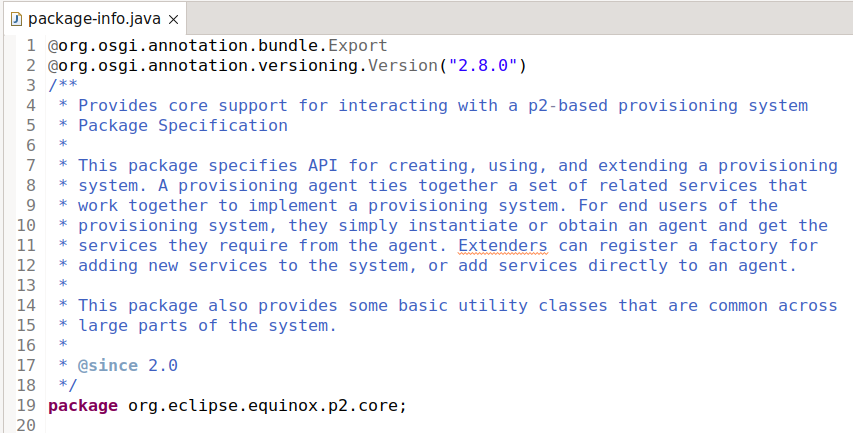
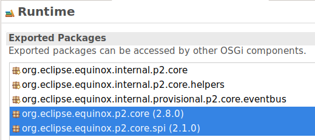
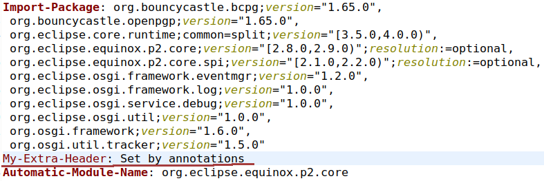

Here are descriptions of some of the more interesting or significant changes made to the Plug-in Development Environment (PDE) for the 4.25 release of Eclipse. They are grouped into:
General Updates |
|
| Default target platform ships different 3rd party bundles |
Some 3rd-party bundles (JUnit, some Apache commons, ASM...) have changed as they are now originating from Maven Central instead
of Eclipse Orbit. They sometimes provide slightly different capabilities so some remediation may be necessary if you're using
the default target plaform.
See the documentation for details about possible issues and remediation. |
| Support for the OSGi Bundle and Versioning Annotations |
PDE now supports the OSGi Bundle and
OSGi Versioning annotations to be used in a Plugin Project.
To enable the annotations you only need to add them to the target platform e.g. with the following locations: <target name="annotations"> <locations> <location includeDependencyDepth="none" includeSource="true" missingManifest="error" type="Maven"> <dependencies> <dependency> <groupId>org.osgi</groupId> <artifactId>org.osgi.annotation.versioning</artifactId> <version>1.1.2</version> <type>jar</type> </dependency> </dependencies> </location> <location includeDependencyDepth="none" includeSource="true" missingManifest="error" type="Maven"> <dependencies> <dependency> <groupId>org.osgi</groupId> <artifactId>org.osgi.annotation.bundle</artifactId> <version>2.0.0</version> <type>jar</type> </dependency> </dependencies> </location> </locations> </target>but of course any other source is accepted (e.g. directory locations or update-sites). For example, you can now use them in the following way on a package-info.java:
@org.osgi.annotation.bundle.Export
@org.osgi.annotation.versioning.Version("1.0")
package bundle.annotations.project;
Or on an interface
import org.osgi.annotation.versioning.ProviderType;
@ProviderType
public interface ProviderInterface {
}
and then they can be processed by other tools (e.g. bnd or tycho).
PDE now also supports the @Export and @Version annotations, if you put them on a package-info.java file like this:
 theMANIFEST.MF is updated accordingly

The same works for MANIFEST.MF
 |